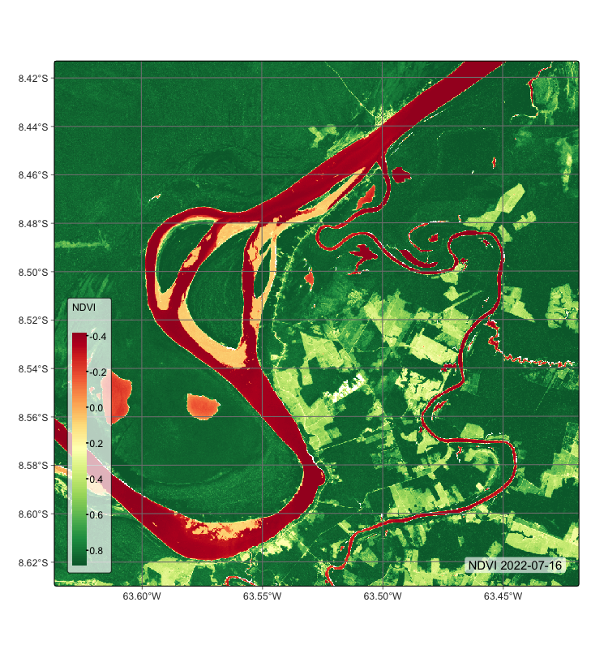
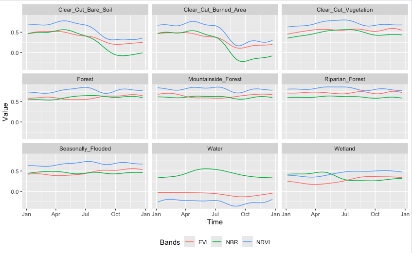
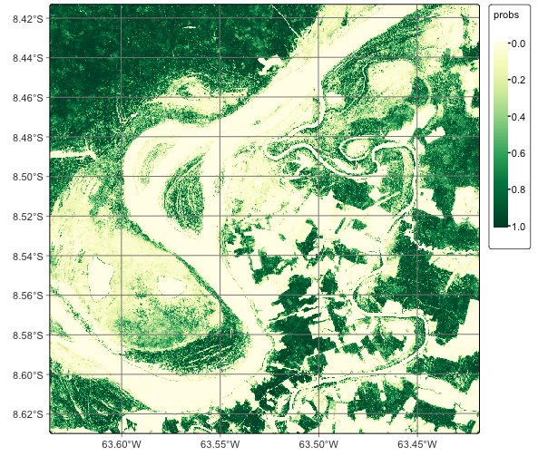
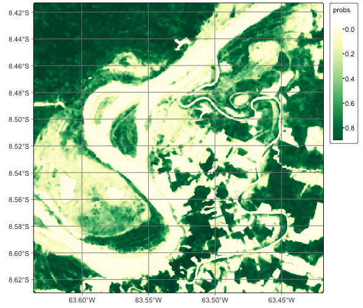
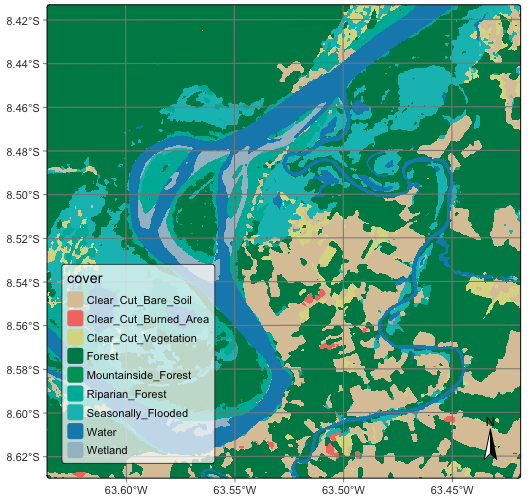
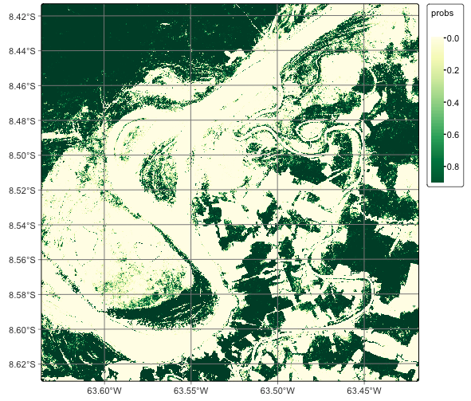
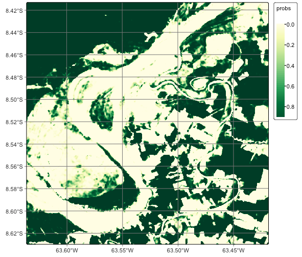
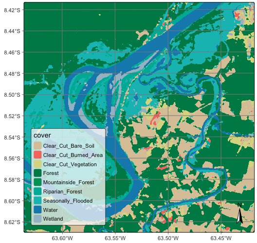

# load packages "torch" and "luz"
library(torch)
library(luz)
torch::install_torch()
# load packages "sits" and "sitsdata"
library(sits)
library(sitsdata)
# set tempdir if it does not exist
tempdir_r <- "~/sitsbook/tempdir/R/cl_rasterclassification"
dir.create(tempdir_r, showWarnings = FALSE)18 Classification of raster data cubes
Configurations to run this chapter
# load "pysits" library
from pysits import *
from pathlib import Path
# set tempdir if it does not exist
tempdir_py = Path.home() / "sitsbook/tempdir/Python/cl_rasterclassification"
tempdir_py.mkdir(parents=True, exist_ok=True)
This Chapter discusses how to classify data cubes by providing a step-by-step example. Our study area is the state of Rondonia, Brazil, which underwent substantial deforestation in the last decades. The objective of the case study is to detect deforested areas.
18.1 Data cube for case study
The examples of this chapter use a pre-built data cube of Sentinel-2 images, available in the package sitsdata. These images are from the SENTINEL-2-L2A collection in Microsoft Planetary Computer (MPC). The data consists of bands BO2, B8A, and B11, and indexes NDVI, EVI and NBR in a small area of \(1200 \times 1200\) pixels in the state of Rondonia. As explained in Chapter Data cubes from local files, we need to inform sits how to parse these file names to obtain tile, date, and band information. Image files are named according to the convention “satellite_sensor_tile_band_date” (e.g., SENTINEL-2_MSI_20LKP_BO2_2020_06_04.tif) which is the default format in sits.
# Files are available in a local directory
data_dir <- system.file("extdata/Rondonia-20LMR/",
package = "sitsdata")
# Read data cube
rondonia_20LMR <- sits_cube(
source = "MPC",
collection = "SENTINEL-2-L2A",
data_dir = data_dir
)
# Plot the cube
plot(rondonia_20LMR, date = "2022-07-16", band = "NDVI")# Files are available in a local directory
data_dir = r_package_dir("extdata/Rondonia-20LMR/",
package = "sitsdata")
# Read data cube
rondonia_20LMR = sits_cube(
source = "MPC",
collection = "SENTINEL-2-L2A",
data_dir = data_dir
)
# Plot the cube
plot(rondonia_20LMR, date = "2022-07-16", band = "NDVI")
18.2 Training data for the case study
This case study uses the training dataset samples_deforestation_rondonia, available in package sitsdata. This dataset consists of 6007 samples collected from Sentinel-2 images covering the state of Rondonia. There are nine classes: Clear_Cut_Bare_Soil, Clear_Cut_Burned_Area, Mountainside_Forest, Forest, Riparian_Forest, Clear_Cut_Vegetation, Water, Wetland, and Seasonally_Flooded. Each time series contains values from Sentinel-2/2A bands B02, B03, B04, B05, B06, B07, B8A, B08, B11 and B12, from 2022-01-05 to 2022-12-23 in 16-day intervals. The samples are intended to detect deforestation events and have been collected by remote sensing experts using visual interpretation.
# Obtain the samples
data("samples_deforestation_rondonia")
# Show the contents of the samples
summary(samples_deforestation_rondonia)# A tibble: 9 × 3
label count prop
<chr> <int> <dbl>
1 Clear_Cut_Bare_Soil 944 0.157
2 Clear_Cut_Burned_Area 983 0.164
3 Clear_Cut_Vegetation 603 0.100
4 Forest 964 0.160
5 Mountainside_Forest 211 0.0351
6 Riparian_Forest 1247 0.208
7 Seasonally_Flooded 731 0.122
8 Water 109 0.0181
9 Wetland 215 0.0358# Obtain the samples
samples_deforestation_rondonia = load_samples_dataset(
name = "samples_deforestation_rondonia",
package = "sitsdata"
)
# Show the contents of the samples
summary(samples_deforestation_rondonia) label count prop
1 Clear_Cut_Bare_Soil 944 0.157150
2 Clear_Cut_Burned_Area 983 0.163642
3 Clear_Cut_Vegetation 603 0.100383
4 Forest 964 0.160479
5 Mountainside_Forest 211 0.035126
6 Riparian_Forest 1247 0.207591
7 Seasonally_Flooded 731 0.121691
8 Water 109 0.018145
9 Wetland 215 0.035792It is helpful to plot the basic patterns associated with the samples to understand the training set better. The function sits_patterns() uses a generalized additive model (GAM) to predict a smooth, idealized approximation to the time series associated with each class for all bands. Since the data cube used in the classification has 10 bands, we obtain the indexes NDVI, EVI, and NBR before showing the patterns.
# Generate indexes
samples_deforestation_indices <- samples_deforestation_rondonia |>
sits_apply(NDVI = (B08 - B04)/(B08 + B04)) |>
sits_apply(NBR = (B08 - B12) / (B08 + B12)) |>
sits_apply(EVI = 2.5 * (B08 - B04) / ((B08 + 6.0 * B04 - 7.5 * B02) + 1.0))
# Generate and plot patterns
samples_deforestation_indices |>
sits_select(bands = c("NDVI", "EVI", "NBR")) |>
sits_patterns() |>
plot()# Generate indexes
samples_deforestation_indices = sits_apply(
data = samples_deforestation_rondonia,
NDVI = "(B08 - B04)/(B08 + B04)",
NBR = "(B08 - B12) / (B08 + B12)",
EVI = "2.5 * (B08 - B04) / ((B08 + 6.0 * B04 - 7.5 * B02) + 1.0)"
)
# Generate patterns
patterns = sits_patterns(
sits_select(
data = samples_deforestation_indices,
bands = ("NDVI", "EVI", "NBR")
)
)
# Plot patterns
plot(patterns)
The patterns show different temporal responses for the selected classes. They match the typical behavior of deforestation in the Amazon. In most cases, the forest is cut at the start of the dry season (May/June). At the end of the dry season, some clear-cut areas are burned to clean the remains; this action is reflected in the steep fall of the response of B11 values of burned area samples after August. The areas where native trees have been cut but some vegatation remain (“Clear_Cut_Vegetation”) have values in the B8A band that increase during the period.
Training machine learning models
The next step is to train a machine learning model to illustrate CPU-based classification. We build a Random Forest model using sits_train() and then create a plot to find out what are the most important variables for the model.
# set the seed to get the same result
set.seed(03022024)
# Train model using Random Forest algorithm
rfor_model <- sits_train(
samples_deforestation_rondonia,
ml_method = sits_rfor()
)
# plot the model results
plot(rfor_model)# set the seed to get the same result
r_set_seed(03022024)
# Train model using Random Forest algorithm
rfor_model = sits_train(
samples_deforestation_rondonia,
ml_method = sits_rfor()
)
# plot the model results
plot(rfor_model)
The figure shows bands and dates represent relevant inflection points in the image time series.
Classification of machine learning models in CPUs
By default, all classification algorithms in sits use CPU-based parallel processing, done internally by the package. The algorithms are adaptable; the only requirement for users is to inform the configuration of their machines. To achieve efficiency, sits implements a fault-tolerant multitasking procedure, using a cluster of independent workers linked to a virtual machine. To avoid communication overhead, all large payloads are read and stored independently; direct interaction between the main process and the workers is kept at a minimum. Details of CPU-based parallel processing in sits can be found in the Chapter How parallel processing works in SITS.
To classify both data cubes and sets of time series, use sits_classify(), which uses parallel processing to speed up the performance, as described at the end of this Chapter. Its most relevant parameters are: (a) data, either a data cube or a set of time series; (b) ml_model, a trained model using one of the machine learning methods provided; (c) multicores, number of CPU cores that will be used for processing; (d) memsize, memory available for classification; (e) output_dir, directory where results will be stored; (f) version, for version control. To follow the processing steps, turn on the parameters verbose to print information and progress to get a progress bar. The classification result is a data cube with a set of probability layers, one for each output class. Each probability layer contains the model’s assessment of how likely each pixel belongs to the related class. The probability cube can be visualized with plot(). In this example, we show only the probabilities associated to label “Forest”.
# Classify data cube to obtain a probability cube
rondonia_20LMR_probs <- sits_classify(
data = rondonia_20LMR,
ml_model = rfor_model,
output_dir = tempdir_r,
version = "rf-raster",
multicores = 4,
memsize = 16)
plot(rondonia_20LMR_probs, labels = "Forest", palette = "YlGn")# Classify data cube to obtain a probability cube
rondonia_20LMR_probs = sits_classify(
data = rondonia_20LMR,
ml_model = rfor_model,
output_dir = tempdir_py,
version = "rf-raster",
multicores = 4,
memsize = 16)
plot(rondonia_20LMR_probs, labels = "Forest", palette = "YlGn")
The probability cube provides information on the output values of the algorithm for each class. Most probability maps contain outliers or misclassified pixels. The labeled map generated from the pixel-based time series classification method exhibits several misclassified pixels, which are small patches surrounded by a different class. This occurrence of outliers is a common issue that arises due to the inherent nature of this classification approach. Regardless of their resolution, mixed pixels are prevalent in images, and each class exhibits considerable data variability. As a result, these factors can lead to outliers that are more likely to be misclassified. To overcome this limitation, sits employs post-processing smoothing techniques that leverage the spatial context of the probability cubes to refine the results. These techniques will be discussed in the Chapter Bayesian smoothing for post-processing. In what follows, we will generate the smoothed cube to illustrate the procedure.
# Smoothen a probability cube
rondonia_20LMR_bayes <- sits_smooth(
cube = rondonia_20LMR_probs,
output_dir = tempdir_r,
version = "rf-raster",
multicores = 4,
memsize = 16)
plot(rondonia_20LMR_bayes, labels = c("Forest"), palette = "YlGn")# Smoothen a probability cube
rondonia_20LMR_bayes = sits_smooth(
cube = rondonia_20LMR_probs,
output_dir = tempdir_py,
version = "rf-raster",
multicores = 4,
memsize = 16)
plot(rondonia_20LMR_bayes, labels = ("Forest"), palette = "YlGn")
In general, users should perform a post-processing smoothing after obtaining the probability maps in raster format. After the post-processing operation, we apply sits_label_classification() to obtain a map with the most likely class for each pixel. For each pixel, the sits_label_classification() function takes the label with highest probability and assigns it to the resulting map. The output is a labelled map with classes.
# Generate a thematic map
rondonia_20LMR_class <- sits_label_classification(
cube = rondonia_20LMR_bayes,
multicores = 4,
memsize = 12,
output_dir = tempdir_r,
version = "rf-raster")
# Plot the thematic map
plot(rondonia_20LMR_class, legend_text_size = 0.7)# Generate a thematic map
rondonia_20LMR_class = sits_label_classification(
cube = rondonia_20LMR_bayes,
multicores = 4,
memsize = 12,
output_dir = tempdir_py,
version = "rf-raster")
# Plot the thematic map
plot(rondonia_20LMR_class, legend_text_size = 0.7)
Training and running deep learning models
The next examples show how to run deep learning models in sits. The case study uses the Temporal CNN model [1], which is described in Chapter Machine learning for data cubes. Deep learning time series classification methods in sits, which include sits_tempcnn(), sits_mlp(), sits_lightae() and sits_tae(), are written using the torch package, which is an adaptation of pyTorch to the R environment. These algorithms can use a CUDA-compatible NVDIA GPU if one is available and has been properly configured. Please refer to the torch installation guide for details on how to configure torch to use GPUs. If no GPU is available, these algorithms will run on regular CPUs, using the same parallelization methods described in the traditional machine learning methods. Typically, there is a 10-fold performance increase when running torch based methods in GPUs relative to their processing time in GPU.
We take the same data cube and training data used in the previous examples and use a Temporal CNN method. The first step is to obtain a deep learning model using the sits_tempcnn() algorithm. We use the tuned parameters obtained in the example of the previous chapter.
tcnn_model <- sits_train(
samples_deforestation_rondonia,
sits_tempcnn(
cnn_layers = c(256, 256, 256),
cnn_kernels = c(5, 5, 5),
cnn_dropout_rates = c(0.2, 0.2, 0.2),
opt_hparams = list(
lr = 0.0004,
weight_decay = 0.00015
)
)
)tcnn_model = sits_train(
samples_deforestation_rondonia,
sits_tempcnn(
cnn_layers = (256, 256, 256),
cnn_kernels = (5, 5, 5),
cnn_dropout_rates = (0.2, 0.2, 0.2),
opt_hparams = dict(
lr = 0.0004,
weight_decay = 0.00015
)
)
)After training the model, we classify the data cube. If a GPU is available, users need to provide the additional parameter gpu_memory to sits_classify(). This information will be used by sits to optimize access to the GPU and speed up processing.
rondonia_20LMR_probs_tcnn <- sits_classify(
rondonia_20LMR,
ml_model = tcnn_model,
output_dir = tempdir_r,
version = "tcnn-raster",
gpu_memory = 16,
multicores = 6,
memsize = 24
)
plot(rondonia_20LMR_probs_tcnn, labels = c("Forest"), palette = "YlGn")rondonia_20LMR_probs_tcnn = sits_classify(
rondonia_20LMR,
ml_model = tcnn_model,
output_dir = tempdir_py,
version = "tcnn-raster",
gpu_memory = 16,
multicores = 6,
memsize = 24
)
plot(rondonia_20LMR_probs_tcnn, labels = c("Forest"), palette = "YlGn")
After classification, we can smooth the probability cube. It is useful to compare the smoothed map for class Forest resulting from the TempCNN model with that produced by the Random Forest algorithm. The TempCNN model tends to show more confidence in its predictions than the random forests one. This is a feature of the model more than an intrinsic property of the training data or the data cube.
# Smoothen the probability map
rondonia_20LMR_bayes_tcnn <- sits_smooth(
rondonia_20LMR_probs_tcnn,
output_dir = tempdir_r,
version = "tcnn-raster",
multicores = 6,
memsize = 24
)
plot(rondonia_20LMR_bayes_tcnn, labels = c("Forest"), palette = "YlGn")# Smoothen the probability map
rondonia_20LMR_bayes_tcnn = sits_smooth(
rondonia_20LMR_probs_tcnn,
output_dir = tempdir_py,
version = "tcnn-raster",
multicores = 6,
memsize = 24
)
plot(rondonia_20LMR_bayes_tcnn, labels = ("Forest"), palette = "YlGn")
We then label the resulting smoothed probabilities to obtain a classified map.
# Obtain the final labelled map
rondonia_20LMR_class_tcnn <- sits_label_classification(
rondonia_20LMR_bayes_tcnn,
output_dir = tempdir_r,
version = "tcnn-raster",
multicores = 6,
memsize = 24
)
plot(rondonia_20LMR_class_tcnn)# Obtain the final labelled map
rondonia_20LMR_class_tcnn = sits_label_classification(
rondonia_20LMR_bayes_tcnn,
output_dir = tempdir_py,
version = "tcnn-raster",
multicores = 6,
memsize = 24
)
plot(rondonia_20LMR_class_tcnn)
18.3 Summary
This chapter presents a detailed example of how to train models and apply them to raster classification in sits. The procedure is simple and direct, using a workflow that combines sits_train(), sits_classify(), sits_smooth() and sits_label_classification(). For traditional machine learning models, such as Random Forest, the code is optimized for CPU processing and users will see good performance. In case of deep learning model, sits is optimized for GPU processing. The typical time for classifying a 10-band Sentinel-2 tile in a CPU using rRandom Forest is 20 minutes in a moderately sized machine (16 cores, 64 GB RAM). The same performance is expected when running deep learning models in a standard GPU with 16 GB memory.
References
[1]
C. Pelletier, G. I. Webb, and F. Petitjean, “Temporal Convolutional Neural Network for the Classification of Satellite Image Time Series,” Remote Sensing, vol. 11, no. 5, 2019.